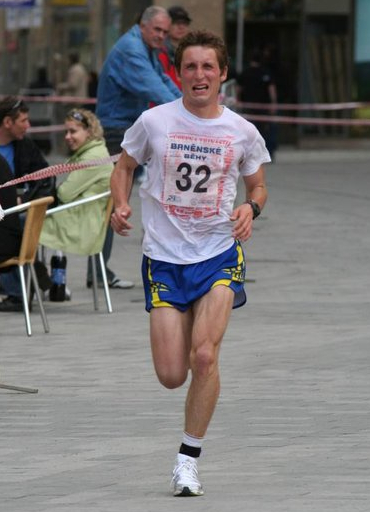

Personalised gut training you run before every important race. On race day, take in more carbs and finish stronger. Built on peer-reviewed sports science.
Two emails before launch. One when we go live. That's it.
The science
Past two hours of endurance racing, carbohydrate availability - not fitness - is what starts to fail first. Feed the gut more carbohydrate, regularly, and it builds more of the transporters that absorb it. Glucose and fructose use separate routes, which is why the ratio matters as the dose climbs.
Sports Medicine · Costa et al., 2025 · SDA / Ultra Sports Science Foundation position statement
Up to 93% of ultra-endurance athletes report GI symptoms during their events. Two sports-dietetics bodies now list gut training among strategies with consistent beneficial outcomes.
Sports Medicine · Martinez et al., 2023 · Systematic review
Across eight trials of gut training: gut discomfort down 47%, carbohydrate malabsorption down 45-54%, total GI symptoms down 60-63%. Protocols used carbohydrate gels every 20 minutes at 90 grams per hour.
European Journal of Applied Physiology · Podlogar et al., 2022
At very high hourly intake, shifting the glucose-fructose ratio from the classic 2:1 toward 1:1 raised how much fuel athletes actually absorbed - with no difference in GI comfort.
Performance Nutrition · Podlogar et al., 2025
Personalised carbohydrate feeding delivered the same fuel oxidation on 28% less carbohydrate, with lower stomach fullness and lower perceived effort in trained athletes.
What the evidence doesn't say
Two weeks of very high carbohydrate plus gut training produced no extra performance benefit in elite race-walkers, and slightly more GI symptoms (King et al., 2022). A 2025 review argues the evidence for ≥100 g/h improving performance is still limited (Wilson). We think the failure mode in both cases is "more carbs for everyone" - the opposite of a progressive, individual protocol. But you should know the argument exists.
How it works
Race, date, current gel-per-hour habit, past GI history. The data is used to set your starting dose.
A week-by-week gel plan starting slightly below your current tolerance and adding no more than 10 grams per hour every two to three weeks.
The gels for the next phase only - Foundation carbs first, then Build, then Race-Specific. Each pack labelled by the week.
After each long session, note how it went. A rough block holds the dose; a smooth one adds up to 10 grams per hour.
On race day, take the load you already hit in training - the one you tested on your last long session. No new experiments.
Sample program
Example: a 16-week Ironman build for an athlete currently taking 45 grams per hour. A 10-week half-marathon build looks different - fewer weeks, and a lower target load.
Weeks 1-3 · Foundation Phase
Starting from you
Your current intake is your starting point. We establish your baseline, identify sensitivities, and build the habit.
Weeks 4-8 · Build Phase
Progressive overload
Carbohydrate load increases week by week. Gut transporters adapt. Multi-source carbohydrate ratios introduced.
Weeks 9-13 · Race-Specific Phase
Race-intensity fuelling
Simulate your exact race conditions. Practise your race-day intake until it feels effortless.
Weeks 14-16 · Taper & Race
Confidence & confirmation
Reduce volume, lock in race-day strategy. By race morning, the load you'll hit is a load you've already trained for.

Why I'm building this
I've never been a professional. Sport has simply been my passion for as long as I can remember. My half marathon best is 1:18 - and as the time tells you, that's not fast enough for anyone to pay me for it.
I ran that time while eating almost nothing. I was afraid of sugar and afraid of racing with a full stomach, so I under-fuelled for years and called it discipline. When I finally tried to fuel properly, my gut couldn't take it - and I assumed that was just me. It isn't. Tolerance is trainable, and almost nobody trains it on purpose.
I'm not a nutritionist, which is exactly why I'm not building this alone - the protocols are being developed together with sports nutritionists. What I bring is an MSc in PE teaching and a BSc in physiotherapy from Masaryk University in Brno, and a BSc in computing from the University of Portsmouth: how the body adapts to load, how to build a progression, and how to turn it into software.
The research already exists. The plan doesn't. I'm building the plan, in time for the 2027 season.
- Lukas
lukas@trainedgut.com - I read every email personally.
Who this isn't for
Race-specific, week-by-week, fully aligned to your training.
Two emails before launch. One when we go live. That's it.